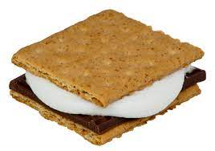

S'MORES

Description:
S'mores is EXTREMELY EASY to do. In fact, the only thing that you'd have to worry
about is the ingredients.
S'mores are designed to be an enjoyable snack especially to campers. Here are the things you need to create s'mores:
Ingredients
- Chocolates (preferrably hersheys or any squared chocolates)
- Marshmallows
- Crackers (Grahams)
See? You only need three ingredients to make a successful s'mores!
Now, time to learn how to make one:
Steps
- Cut the crackers in half (the size of the s'mores can entirely depend on you! Just vary on the
size of your marshmallows)
- Put the halfed crackers on the plate
- Place the marshamallows on top of the sliced crackers.
- Next, place them on the microwave. Put the microwave on high and heat it up for at least 20 seconds.
- Once that is done, get your chocolates and half them (same size as the crackers)
- Get the other half of the crackers and place it on top of the chocolates (forming some sort of
sandwich)
- AND YOU'RE DONE!